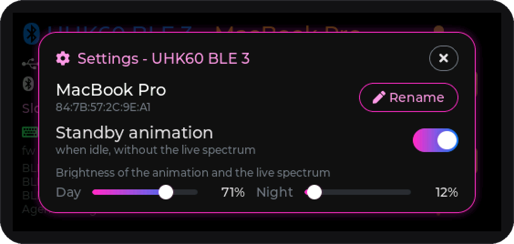
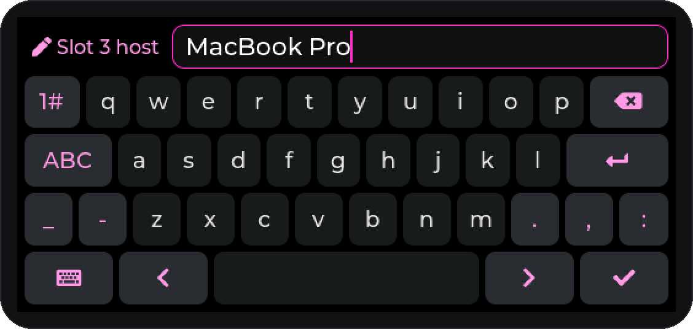
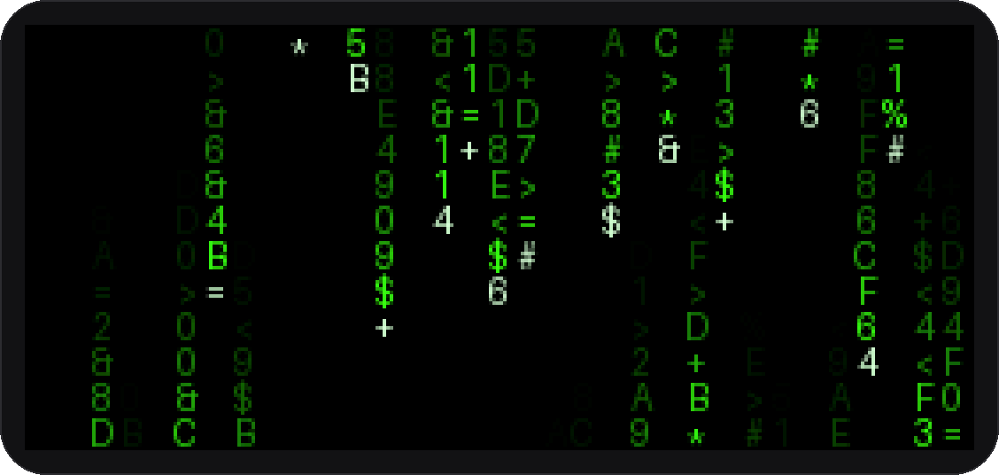
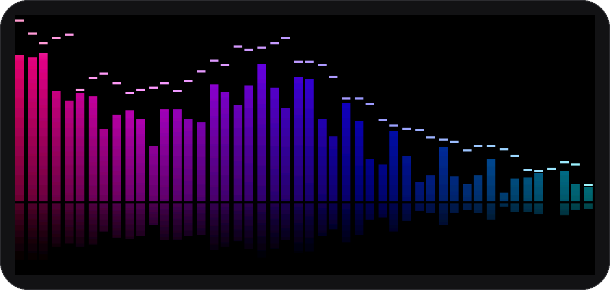
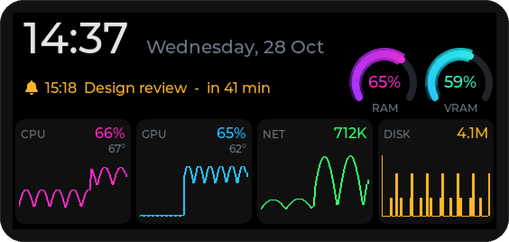
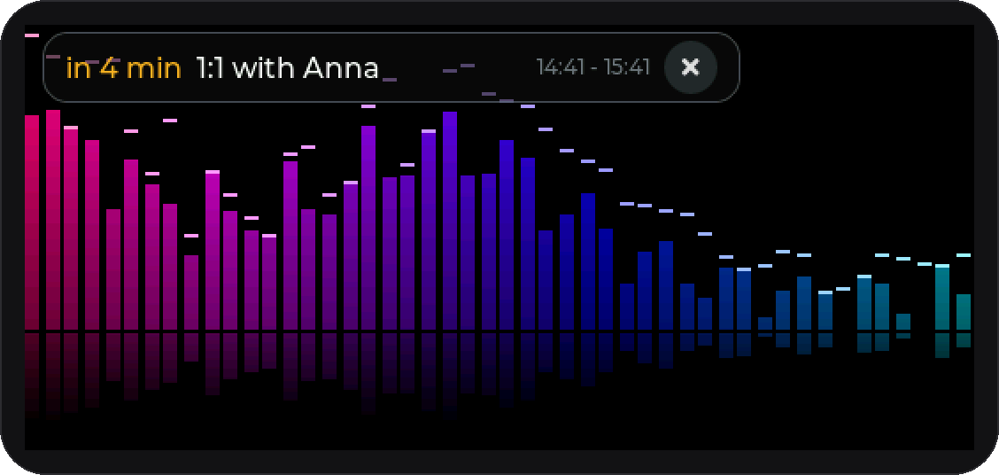
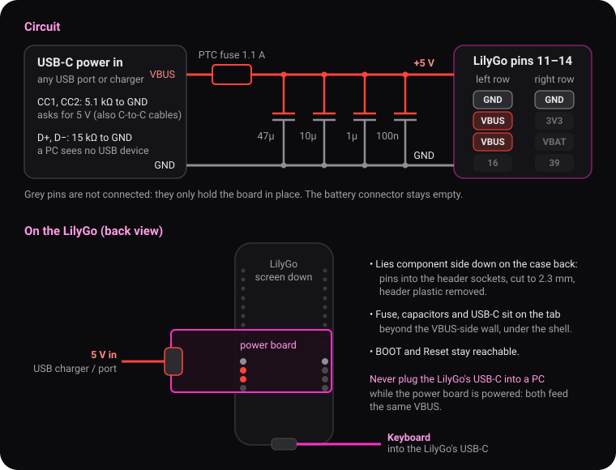
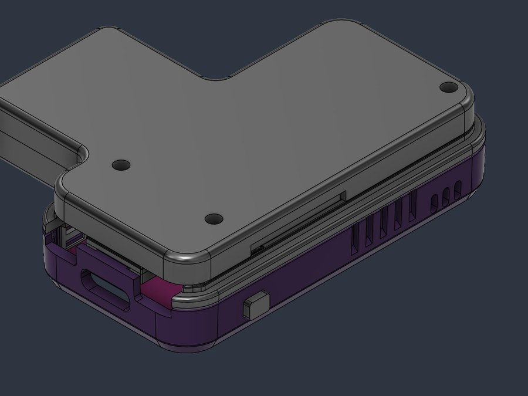

UHK 60 v2 → Bluetooth adapter
Flash the adapter firmware onto a LilyGo T-Display-S3 AMOLED Plus straight from the browser. The board becomes the keyboard's USB host and a Bluetooth keyboard and mouse for up to five computers, tablets or phones, and UHK Agent works over Bluetooth too.

This browser cannot talk to serial ports. Use Chrome, Edge or Opera on a desktop computer.
The installer needs a secure page (https).
Install
- Unplug the keyboard and the adapter's 5 V supply, then plug the board's USB-C straight into the computer with a data cable.
- Click Install firmware and pick the board's port (usually “USB JTAG/serial debug unit”).
- No port in the list? The firmware is already running and uses the USB port for the keyboard. Hold BOOT, press Reset, release BOOT, then try again.
- When it finishes and the screen stays black, press Reset once.
First run
- Wire the 5 V supply (see below) and plug the keyboard into the board's USB-C port. The adapter reads the keyboard's layout once and remembers it.
- Pick a slot (tap its pad on the right), hold BOOT until the bar along the bottom fills, then pair UHK60 BLE 1…5 on the computer or phone within 20 s and type the 6-digit code the adapter shows.
- Settings: a short press of BOOT, or a tap on the active slot's pad. Give the slot's host a name (it replaces the address on the screen), switch the standby animation on or off, and set its day and night brightness.




Animation, live spectrum, dashboard and reminders (Windows)
When it is idle, the adapter can play an animation, show a dashboard with the clock, your next meeting and the PC's load, or the spectrum of whatever the PC is playing, streamed live. Fifteen minutes before a meeting a reminder card appears over whatever is on the screen. All of it comes from the Windows PC paired on the active slot, with two small programs that need no installation and no Python.




Live spectrum, dashboard, reminders
Runs as an icon in the notification area, no window.
uhk-ble-live.exe~30 MBBuilt from the same version as the firmware above, and attached to every release. They are not code-signed, so Windows SmartScreen may warn the first time: More info → Run anyway.
Before you start
- Windows 10 or 11 with Bluetooth. The PC is paired with the adapter, its slot is the active one, and the keyboard types on it: the programs use Windows' own connection to the adapter.
- One program at a time: pause or exit the live spectrum before uploading an animation, otherwise the uploader reports that the adapter is busy.
Live spectrum
- Double-click uhk-ble-live.exe. An icon with bars appears in the notification area (maybe in the overflow behind the ^ arrow), and the bars show on the adapter as soon as the PC plays something.
- The icon's menu shows the status and has Pause / Resume (also a left click), the switches Audio spectrum, System stats and Calendar reminders, Auto gain (quiet music still fills the bars), Edit settings, Open log and Exit.
- The icon turns grey while the adapter is out of reach or another slot is active. The program tries again every 10 s, so it can stay running.
- A touch on the adapter shows its normal screen; the spectrum comes back after 30 s.
- To start it with Windows: Win+R, type
shell:startup, and put a shortcut to the program into the folder that opens.
It captures what the PC plays on its default output device, runs the FFT on the PC and sends only the band levels: about 50 bytes, 60 times a second. The keyboard's own traffic is not affected.
Dashboard and meeting reminders
- On the adapter: a short press of BOOT opens the settings; under Standby screen choose Dash (or Both: three minutes of dashboard, two of animation, in turns). After 60 s without a touch the screen shows the clock and date, the next meeting and the PC's load - RAM and VRAM as ring gauges, CPU and GPU with temperatures, network and disk with the last two minutes as a sparkline - while uhk-ble-live.exe runs with System stats on (it is, by default).
- For the reminders, give it your calendar: in Google Calendar open the calendar's settings, copy
Secret address in iCal format, then in the icon's menu choose Edit settings, paste the
address as the value of
"calendar", save, and Pause / Resume. Any other .ics address, or a file, works the same. - Fifteen minutes before a meeting the adapter shows a card with its name and time over whatever is on the screen, and wakes a dark screen for it. Your own meetings and invitations you accepted get a solid card; ones you have not answered a translucent one. Tap ✕ to dismiss it for today - the program remembers that, so it does not come back after a restart. All-day events, cancelled meetings and invitations you declined are never shown.
The load goes out as 17 bytes twice a second, the next three meetings of the coming 12 hours once a
minute; the calendar is fetched every 5 minutes. GPU figures come from NVIDIA's NVML; other GPUs show
"-". Settings and the dismissed list live in %LOCALAPPDATA%\uhk-ble-live.
Standby animation
- Drag a GIF or WebP file, or a folder of PNG frames, onto uhk-ble-anim.exe. A window shows the upload. It takes a few seconds (~45 KB/s), and the keyboard keeps working.
- The animation plays after 60 s without a touch (Standby screen: Anim in the settings, the default), until the next touch or BOOT press. Typing does not stop it. After 30 minutes the screen goes dark (AMOLED burn-in).
- Pictures are fitted to the 536 × 240 screen and stored at half resolution with doubled pixels; the adapter has 3.4 MB for the animation.
More from a terminal (Win+R → cmd, then cd to the
program's folder):
uhk-ble-anim.exe upload demo:matrix the built-in matrix rain
uhk-ble-anim.exe preview my.gif -o check.gif how the adapter will show it
uhk-ble-anim.exe play show it now (also: stop)
uhk-ble-anim.exe info what is stored, settings, clock
uhk-ble-anim.exe set --delay 120 --off-after 3600
Brightness follows the time of day: the night level until 6:00, the day level from 9:00 to 18:00,
dimming down until 22:00. Set both in the adapter's settings (a short press of BOOT) or with
uhk-ble-anim.exe set --brightness 200 --night 20. The adapter's clock keeps time without
power and is set from the PC whenever one of the programs connects.
Build the adapter
The adapter is just the board and a 5 V supply: +5 V on the board's VBUS pin, and the keyboard plugged into its USB-C port. The USB-C port's VBUS is on the same net as the VBUS pin, so the keyboard is powered from there too. The simplest way is a small power board that plugs onto the header pins; wiring it by hand works just as well.
Power board

- Order it. 2 layers, 17.4 × 45 mm, all parts assembled on one side. The gerber, BOM and placement files are ready for JLCPCB, with LCSC part numbers.
- Pins. Solder two 1×4 male pin headers (2.54 mm) in from the component side, slide their plastic strips off, and cut the pins to 2.3 mm on the component side and at most 0.8 mm on the other.
- Fit. Plug it into pins 11–14 of both header rows (the four pins nearest the USB-C end), component side towards the case, with the power USB-C tab sticking out on the VBUS side.
- Shell (optional). A 3D-printed lid and tray cover the power board and hold it with the case's own screws: STL, STEP and printing notes (PETG or PLA, no supports, M1.2 screws).
- Plug the keyboard into the LilyGo's USB-C, and a USB charger or port into the power board.

Header pins

| Pin | Connect to |
|---|---|
| VBUS (left, either of the two) | +5 V, after the fuse |
| GND | ground of the 5 V supply |
| USB-C port | the keyboard: its cable directly, or the plug breakout of a panel jack |
| BOOT button | nothing to wire: hold 1.5 s to pair, a short press opens the settings, and held at power-up it starts the bootloader for flashing |
Leave the other pins alone: GPIO1–3, 11–15 and 21 are used by the PMU, touch, RTC and SD card on the board.
Hand-wired instead

- Parts. A USB 2.0 USB-C receptacle with two 5.1 kΩ resistors (or any other 5 V source), a resettable fuse (polyfuse) of about 1 A, and a 100–220 µF capacitor (10 V or more).
- Power. Run the input's +5 V through the polyfuse to one of the board's VBUS pins, and its ground to a GND pin. Put the 100–220 µF capacitor across +5 V and GND close to the board. On a USB-C input jack, connect a 5.1 kΩ resistor from CC1 to GND and another from CC2 to GND, so chargers and USB-C to USB-C cables supply 5 V. Its D+ / D− stay unconnected.
- Keyboard. Plug the keyboard's USB cable into the board's USB-C port. In an enclosure, wire a panel USB-C jack to a USB-C plug breakout in the board's port: D+, D−, VBUS and GND straight through, a 56 kΩ resistor from CC1 to VBUS and another from CC2 to VBUS, and join A6 with B6 (D+) and A7 with B7 (D−). Keep the D+ / D− wires short and together.
The board's USB-C VBUS and its VBUS pins are the same net. Never plug the board's USB-C into a computer while +5 V is on the VBUS pin, from the power board or hand-wired: that connects two 5 V supplies to each other. To flash the board by cable, disconnect the 5 V supply and the keyboard first (then hold BOOT while you plug it in), or update it over Bluetooth.
The UHK asks for up to 500 mA, and the board adds 100–250 mA. Use a USB 3 port (900 mA) or a charger rather than a USB 2.0 port.
Updates
Later versions can also be installed over Bluetooth from Windows, without touching the cable:
pio run -t ota in the project (pause the live spectrum first). See the project README for
details.